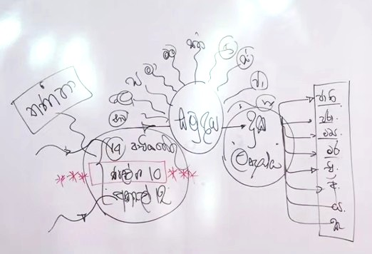
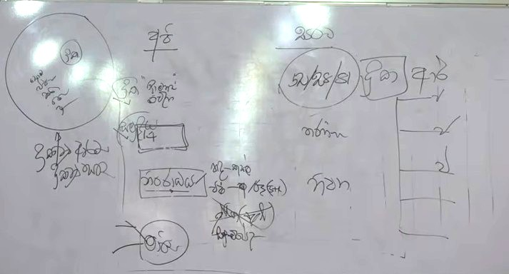

නමෝ තස්ස භගවතො අරහතො සම්මා සම්බුද්ධස්ස ... !!!
අවිද්යාව නම් මහා අන්ධකාරයකි එය එසේ හෙයින් ආර්ය සත්ය දේශනාවේදී අවිද්යාව නම් චතුරාර්ය සත්ය නොදැනීම ලෙසින් භාග්යවතුන් වහන්සේ දේශනා කරන ලදී. එය පාළියෙහි
“තත්ථ කතමා අවිජ්ජා? දුක්ඛෙ අඤ්ඤාණං, දුක්ඛසමුදයෙ අඤ්ඤාණං, දුක්ඛනිරෝධෙ අඤ්ඤාණං, දුක්ඛනිරෝධගාමිනියා පටිපදාය අඤ්ඤාණං.”
ලෙසින් සඳහන් කර ඇත්තේ අවිද්යාව හේතුවෙන් සසර දුක සකස් කරගන්නා නිසාය. අන්ධකාරයේදී අතට හසුවන දෙය පමණක් දැනගන්නා සත්වයා එහි සැබෑ ස්වරූපය සම්මුති වශයෙන් හෝ දැනගන්නේ නැත. එලෙසින්ම රූප, ශබ්ධ, ගන්ධ ආදී ආරම්මණයන්හි සත්ය ස්වභාවය නොවිමසන සත්වයා එහි සම්මුති ස්වභාවය එනම් සවිඥානික හා අවිඥානික වස්තූන් ලෙසින් බාහිරින් විමසමින් ඇති දෙයක් හැටියට ගනිමින් සසර දුක සකස් කරගැනීම සිදු කරනු ලැබේ. බාහිරින් විමසීම යන්නාවූ කරුණ විමසා බැලීමේදී සත්ය වශයෙන් පවතින්නේ කුමක්ද සහ බාහිරින් විමසීම සිදුවන්නේ කෙසේද යන්න සොයා බැලිය යුතුය. ලෝකය සකස් කරගන්නාවූ බඹයක් වූ ශරීරයේ සත්ය ස්වභාවය නම් නාම, රූප පරම්පරා දෙකක පැවැත්මක් වේ. ආර්ය සත්ය දේශනාවේදී සත්ය වශයෙන් ඇත්තාවූ නිර්වාණයෙන් අන්ය ධර්මතා 81 ක් භාග්යවතුන් වහන්සේ දේශනා කරන ලදී එනම් පඨවි, ආපෝ, තේජෝ, වායෝ ලෙස මහා භූත සතර සහ එහි උපාදා රූප 24, නාම (වෛතසික) 52, හා විවිධ ආකාරයෙන් භූමි වශයෙන් සිත් බෙදා දැක්වුවත් අරමුණ දැනගැනීම යනුවෙන් සිත එක් ධර්මතාවයක් ලෙස ගනිමින් සත්ය වශයෙන් ඇත්තාවූ එනම් පරමාර්ථ ධර්මතා 81 දේශනා කරන ලදී. මෙහිදී රූප 28 රූප පරම්පරාව ලෙසද, නාම ධර්මතා 52 හා සිත නාම පරම්පරාව ලෙසද පවතී. මෙසේ ඇත්තාවූ නාම රූප පරම්පරා දෙකක් අවිද්යාව හේතුවෙන් මම, මගේ, මගේ ආත්මය ලෙස ගෙනද, බාහිර ඇත්තේද එබඳු ධර්මතා ලෙසින්ද ගෙන විපාක වශයෙන් යෙදෙන්නාවූ අරමුණු සවිඥානික හා අවිඥානික වස්තූන් ලෙස මනෝමූලිකව සකස් කරගනිමින් සත්වයා විසින් සසර දුක සකස් කරගනු ලැබේ.

හේතු වශයෙන් යෙදෙන්නාවූ රූප, ශබ්ධ, ගන්ධ ආදී අරම්මනයන් සම්මුති වශයෙන් එලෙස දුක සකස් වීමට කෙසේ බලපාන්නේදැයි විමසීමේදී ඒ ඒ ආරම්මණයන් සම්මුති වශයෙන් හඳුනා ගන්නා ආකාරය හේතුවෙන් හේතු සමඟ යෙදෙන්නාවූ පාපිය ධර්මතා නිසා සමුදය වීම සිදුවන බව දැනගත යුතුවේ. ප්රධාන වශයෙන් පාපිය ධර්මතා 14 ක් දේශනා කරන භාග්යවතුන් වහන්සේ එසේ යෙදෙන්නාවූ ධර්මතා හේතුවෙන් සමුදය වීම වන බව දේශනා කරන ලදී. සත්වත්වයේදී කලාතුරකදීම යම් සමුදයක් උවානම් ඒ දුකක සමුදයක් පමණි. එලෙසින් සසර දුක සකස් කරන්නාවූ ධර්මතා පාපිය ධර්මතා 14, ක්ලේශ 10, අකුසල් සිත් 12 (ලෝභ 8, ද්වේශ 2, මෝහ 2) ආදී ලෙසින් ආර්ය සත්ය දේශනාවේදී ඒ ඒ ආකාරයෙන් භාග්යවතුන් වහන්සේ දේශනා කරන ලද්දේ එලෙස සසර දුක සකස් කරන්නාවූ ධර්මතා වේ. දුකෙහි ඇත්තාවූ ලක්ෂණ වශයෙන් ආර්ය සත්ය දේශනාවේදී දුක්ඛ සත්ය වශයෙන් ජාති පි දුක්ඛා, ජරා පි දුක්ඛා, ව්යාධි පි දුක්ඛා, මරණම්පි දුක්ඛං, අප්පියෙහි සම්පයොගො දුක්ඛො, පියෙහි විප්පයොගො දුක්ඛො, යම්පිච්ඡං න ලභති තම්පි දුක්ඛං, සංඛිත්තේන පඤ්චුපාදානක්ඛන්ධා දුක්ඛා ලෙසින් භාග්යවතුන් වහන්සේ විවිධ අවස්ථා අනුව දේශනා කරන ලදී. මෙලෙසින් දුක ඒ ඒ ආකාරයෙන් හටගැනීමට හේතු වශයෙන් යෙදෙන්නාවූ පාපිය ධර්මතා තණ්හාවෙන් අන්ය ධර්මතා අවශේෂ ධර්මතා ලෙසද තණ්හාව (ලෝභය) ඒකාන්ත වශයෙන් සමුදයට හේතුව වශයෙන් යෙදේ.
එලෙසින් ඒකාන්ත වශයෙන් සමුදයට හේතුව වන්නාවූ ධර්මතාවය වන තණ්හාව (ලෝභ චෛතසිකය) හේතුවෙන් දුක්ඛ ලක්ෂණ වන ජාති, ජරා, ව්යාධි වශයෙන් සකස් වීම සිදුවේ. මෙහිදී දැනගත යුතු කරුණ නම් වර්තමානයේ හටගන්නා මෙම ධර්මතා අතීත වශයෙන් යෙදුනාවූ තණ්හාව නිසා සකස් වූ ධර්මතා වන බවය. එලෙසින්ම මෙහිදී දැනගත යුතු අනෙක් කරුණ නම් ඒ ඒ අවස්ථාවේ තණ්හාව යෙදී දුක සකස් වුවත් එලෙස තණ්හාව යෙදෙන අවස්ථාවේ එහි ලක්ෂණ වන ආශ්රව, ඕඝය, යෝග, ග්රන්ථ, උපාදාන, නීවරණ, අනුශය, සංයෝජන, ක්ලේශ ආදී ලක්ෂණ තණ්හාව සමඟ යෙදෙන බවය. සත්ත්වත්වයේදී ප්රධාන වශයෙන් ඇසුරු වන්නාවූ ධර්මතා නම් තණ්හාව හේතුවෙන් සකස් වන්නාවූ ආශ්රව, ඕඝ ආදී ධර්මතා ගුණයන්/ලක්ෂණ වේ. එනම් ඒ ඒ අරමුණු වෙත අකුසල ගුණයන්ගේ/ලක්ෂණයන්ගේ තිබෙන්නාවූ ගුණයන් හේතුවෙන් අරමුණු වෙත ඇදී යමින් දැවීම් තැවීම් සකස් කරගැනීම සිදු කරනු ලැබේ. එලෙසින් ආර්ය සත්ය දේශනාවේදී සමුදය ආර්ය සත්ය ලෙස තණ්හාව දේශනා කරමින් ඒ හා යෙදෙන්නාවූ අකුසල ගුණයන් අරමුණ හා යෙදෙන්නාවූ ආකාරය භාග්යවතුන් දේශනා කරන ලදී.
මෙසේ තණ්හාව සමගින් යෙදෙන්නාවූ ඒ ඒ ගුණයන් ආර්ය සත්ය දේශනාව තුළ අකුසල සංග්රහය ලෙස භාග්යවතුන් වහන්සේ දේශනා කර ඇත. එනම් ඒ ඒ පාපිය ධර්මතා වලට හා එහි ඇත්තාවූ විවිධ ස්වරූපයන් බෙදා දැක්වීමයි. එලෙසින්
ආශ්රව - කාමාශ්රවය, භවාශ්රවය, දෘෂ්ට්යාශ්රවය, අවිද්යාශ්රවය ලෙසද
ඕඝ හා යෝග - කාමෝඝය, භවෝඝය, දිට්ඨෝඝය, අවිජ්ජෝඝය ලෙසද, කාම යෝගය, භව යෝගය, දිට්ඨි යෝගය, අවිජ්ජා යෝගය ලෙසද
ග්රන්ථ - අභිජ්ඣාකායගන්ථ, ව්යාපාද කායගන්ථ, සීලබ්බත පරාමාස කායගන්ථ, ඉදං සච්චාභිනිවේස කායගන්ථ ලෙසද
උපාදාන - කාමුපාදානය, දිට්ඨුපාදානය, සීලබ්බතුපාදානය, අත්තවාදුපාදානය ලෙසද
නීවරණ - කාමච්ඡන්ද නීවරණය, ව්යාපාද නීවරණය, ථීනමිද්ධ නීවරණය, උද්ධච්ච කුක්කුච්ච නීවරණය, විචිකිච්ඡා නීවරණය, අවිජ්ජා නීවරණය ලෙසද
අනුශය - කාමරාගානුසය, භවරාගානුසය, පටිඝානුසය, මානානුසය, දිට්ඨානුසය, විචිකිච්ඡානුසය, අවිජ්ජානුසය ලෙසද
සංයෝජන - කාමරාග සංයෝජනය, භවරාග සංයෝජනය, පටිඝ සංයෝජනය, මාන සංයෝජනය, දිට්ඨි සංයෝජනය, සීලබ්බතපරාමාස සංයෝජනය, විචිකිච්ඡා සංයෝජනය, ඉස්සා සංයෝජනය, මච්ඡරිය සංයෝජනය, අවිජ්ජා සංයෝජනය ලෙසද
ක්ලේශ - ලෝභය, ද්වේෂය, මෝහය, මානය, දෘෂ්ටිය, විචිකිත්සාව, ථීනය, උද්ධච්චය, අහිරිකය, අනොත්තප්පය ලෙසද
වෙන් වෙන් වශයෙන් ධර්ම සමූහ ඒ ඒ පාපිය ධර්මතා වලට පහත ලෙස බෙදා දේශනා කරන ලදී.
යොමුව: අකුසල සංග්රහය
අකුසල චෛතසික හා ධර්ම සමූහ
| අකුසල චෛතසික | ආශ්රව | ඕඝ | යෝග | ගන්ථ | උපාදාන | නීවරණ | අනුශය | සංයෝජන | ක්ලේශ |
|---|---|---|---|---|---|---|---|---|---|
| මෝහය | අවිජ්ජාශ්රව | අවිජ්ජෝඝ | අවිජ්ජා යෝග | අවිජ්ජා නීවරණ | අවිජ්ජානුසය | අවිජ්ජා සංයෝජන | මෝහය | ||
| අහිරිකය | අහිරිකය | ||||||||
| අනොත්තප්පය | අනොත්තප්පය | ||||||||
| උද්ධච්චය | උද්ධච්ච කුක්කුච්ච නීවරණ | උද්ධච්චය | |||||||
| ලෝභය | කාමාශ්රව භවාශ්රව | කාමෝඝ භවෝඝ | කාම යෝග භව යෝග | අභිජ්ඣා කායගන්ථ | කාමුපාදාන | කාමච්ඡන්ද | කාමරාගානුසය භවරාගානුසය | කාමරාග භවරාග | ලෝභය |
| දිට්ඨිය | දිට්ඨාශ්රව | දිට්ඨෝඝ | දිට්ඨි යෝග | සීලබ්බතපරාමාස ඉදංසච්චාභිනිවේස | දිට්ඨුපාදාන සීලබ්බතුපාදාන අත්තවාදුපාදාන | දිට්ඨානුසය | දිට්ඨි සීලබ්බතපරාමාස | දිට්ඨිය | |
| මානය | මානානුසය | මාන සංයෝජන | මානය | ||||||
| දෝසය | ව්යාපාද කායගන්ථ | ව්යාපාද නීවරණ | පටිඝානුසය | පටිඝ සංයෝජන | දෝසය | ||||
| ඉස්සාවය | ඉස්සා සංයෝජන | ||||||||
| මච්ඡරියය | මච්ඡරිය සංයෝජන | ||||||||
| කුක්කුච්චය | උද්ධච්ච කුක්කුච්ච නීවරණ | ||||||||
| ථීනය | ථීනමිද්ධ නීවරණ | ථීනය | |||||||
| මිද්ධය | ථීනමිද්ධ නීවරණ | ||||||||
| විචිකිච්ඡාව | විචිකිච්ඡා නීවරණ | විචිකිච්ඡානුසය | විචිකිච්ඡා සංයෝජන | විචිකිච්ඡාව |
අතීත අවිද්යා, කර්ම, තණ්හා හේතුවෙන් ප්රතිසන්ධියේදී සකස් වූ ආයතන හය හා බාහිර ආරම්මණ යෙදීමෙන් වර්තමානයේ ඉපිද ඉපිද නිරුද්ධ වන ස්කන්ධ පංචකයන් විඳීමට ඇති වන්නාවූ කැමැත්ත හේතුවෙන් වර්තමාන අරමුණු අරභයා ආශ්රව වැඩෙන අතර. එසේ සකස් වූවාට පසු ආශ්රවයන් වශයෙන් සන්තානයේ බැසගන්නා අරමුණු දකින, ඇසෙන, දැනෙන, දැනගන්නා මොහොතක් මොහොතක් පාසාම වර්තමාන අරමුණ සමග ගැටගැසී අරමුණ භාහිර ඇතැයි සිතා එයට නැවත නැවතත් තණ්හාවෙන් වෙලීම සිදුවේ. එලෙසින් ආශ්රව, ඕඝ, යෝග පාපිය ගුණයන් හේතුවෙන් සත්වයාට සසරින් මිදීමට නොහැකිවේ. මෙලෙසින් චතුරාර්ය සත්ය දේශනාවේදී සමුදය ආර්ය සත්ය දේශනාවේදී ඒකාන්ත සමුදය වශයෙන් තණ්හාව (ලෝභ චෛතසිකය) ලෙසින් දේශනා කර ඇත්තේ එහි අකුසල ගුණයන් සියල්ල යෙදෙන නිසාවෙනි. එනම් ඒ ඒ අකුසල ගුණයන් යෙදීම විග්රහ කල පරිදි විමසා බැලීමේදී නාම ධර්මතා කිහිපයක පමණක් යෙදෙන අතර ලෝභයෙහි අම ගුණයන් සියල්ල දැකීමට හැකියාව ඇත. එලෙසින්ම ක්ලේශ ලෙස දේශනා කරන්නට දී ඇත්තේ සෘජුවම පරමාර්ථ ධර්මතා වේ ලෝභය - ද්වේෂය - මෝහය - මානය - දෘෂ්ටිය - විචිකිත්සාව - ථීනය - උද්ධච්චය - අහිරිකය - අනොත්තප්පය ලෙසින් සත්ව සන්තානය ඒ ඒ අරමුණු අරභයා දවන තවන ස්වභාවයෙන් මෙම පරමාර්ථ ධර්මතා ක්ලේශ ලෙසින් දේශනා කරන ලදී. පොදුවේ ගත කල පාපිය ධර්මතා 14 දවන තවන ස්වභාවයෙන් යුක්ත වුවත් විශේෂ ලෙස ක්ලේශ වශයෙන් දේශනා කරන ලද්දේ මෙම චෛතසික 10 වේ.

සාමාන්ය ජීවිතයේදී දුක ලෙස ගැනෙනුයේ දෝමනස්ස වේදනාව වන අතර එනම් කායික, මානසික දුක් ස්වභාවයයි. ආර්ය සත්ය දේශනාවේදී දුක්ඛ ආර්ය සත්ය ලෙස භාග්යවතුන් වහන්සේ දේශනා කරනු ලබන්නේ (දේශනා අංක 6 බලන්න) ලෝභයෙන් (සමුදය සත්ය) අන්ය වූ චෛතසික 51, රූප 28, චිත්තය (සිත් 81)/මූල විඤ්ඤාණය යන්නාවූ ධර්මතා සමූහය වේ. එලෙසින් ගත් කල දුක්ඛ ආර්ය සත්යයෙන් මිදී ඇත්තේ නිර්වාණය, මාර්ග සිත් 4, ඵල සිත් 4 හා එහි චෛතසිකයන් වේ. එලෙසින්ම දුකට හේතූන් ලෙස පාපිය ධර්මතා 14 යෙදෙන බවද ආර්ය සත්ය දේශනාවේදී සමුදය ආර්ය සත්ය ලෙස දේශනා කරනු ලබන්නේ "තණ්හාව "වේ. සම්මුතියේදී පාපිය ධර්මතා නැති කිරීම නිරෝධය ලෙස ගන්නා අතර එලෙසින් සිතා සකස් කරගන්නාවූ නිරෝධයන් ලෙස තදංග ප්රහාණය (තාවකාලිව කෙලෙස් ප්රහාණය), විෂ්කම්භන ප්රහාණය (දීර්ඝ කාලයකට කෙලෙස් ප්රහාණය, රූපාවචර, අරූපාවචර ධ්යාන සිත්) වශයෙන් කෙලෙස් ප්රහාණය කරන අතර කෙසේ නමුත් එම ප්රහාණයන් වලින් යලිත් සත්වයා සසරේම යාම සිදුවේ. ආර්ය සත්ය දේශනාවේදී නිරෝධය ලෙස දේශනා කරන්නට යෙදුනේ නිර්වාණයයි එනම් දුක සමුච්ඡේද ප්රහාණය (කෙලෙස් නැවත මතු නොවන සේ ප්රහාණය) වේ. එලෙස සමුච්ඡේද ප්රහාණය කිරීමටනම් සංස්කාර ධර්මතාවයන්ගේ ස්වභාවය නුවණින් විමසා එහි ඇත්තාවූ අනිච්ච ස්වභාවය අවබෝධ කරගත යුතුවේ.
මෙසේ මොහොතක් පාසාම යෝනිසෝමනසිකාරයෙන් සංස්කාරයන්ගේ ආදීනවයන් නුවණින් විමසීමේදී සිදුවන්නා වූ කෘත්යන් වන දුක පිරිසිද දැකීමත්, තණ්හාව ප්රහාණය වීමත්, නිවන අරමුණු වීමත්, මාර්ග අංග වැඩීමත් ආදී කරුණු හේතුවෙන් දුක සමුච්ඡේද ප්රහාණය වීමට නියමිතය. ලෞකික වශයෙන් මාර්ගය නම් ලෞකික වශයෙන් තදංග හා විෂ්කම්භන ප්රහාණයන් සදහා යෙදෙන්නාවූ මාර්ග අංග වැඩීම වන අතර, ආර්ය සත්ය දේශනාවේදී දුක්ඛ ගාමිණී පටිපදාය ආර්ය සත්ය ලෙස වශයෙන් භාග්යවතුන් වහන්සේ දේශනා කරන ලද්දේ ලෝකෝත්තර ආර්ය අෂ්ටාංගික මාර්ගයයි. ආර්ය සත්ය දේශනාව ස්කන්ධ, ධාතු, ආයතනය, සත්ය, පටිච්ච සමුප්පාද ආදී විවිධ ක්රමයන් වලින් භාග්යවතුන් වහන්සේ දේශනා කර ඇත්තේ දුක සමුච්ඡේද ප්රහාණය කරන්නාවූ ක්රමයන්වේ. එලෙසින් කෙසේ දේශනා කලත් දුක පිරිසිඳ දැකීමත්, තණ්හාව ප්රහාණය වීමත්, නිවන අරමුණු වීමත්, මාර්ග අංග වැඩීම ආදී කරුණු ඇතුලත්ව සියළු ක්රමයන් දේශනා කරන ලදී.
දේශනා YouTube සබැඳියාව: youtube.com/watch?v=UTQ4P9GPreI